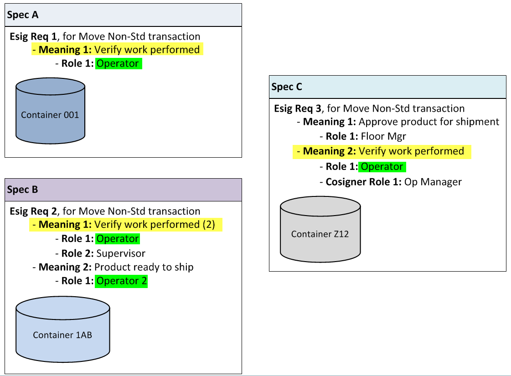

Beschreiben von elektronischen Unterschriften
Nach der FDA sollen elektronische Unterschriften das Äquivalent zur eigenhändigen Unterschrift, Initialien und anderen allgemeinen Unterzeichnungen sein, die durch vorher festgelegte Regeln erforderlich sind. Part 11-Unterschriften schließen elektronische Unterschriften ein, die beispielsweise verwendet werden, um zu dokumentieren, dass bestimmte Ereignisse oder Aktionen in Übereinstimmung mit den vorgeschriebenen Regeln geschehen sind (z.B.: genehmigt, überprüft und verifiziert).
Sie können z. B. eine elektronische Unterschriften-Anforderung definieren, die automatisch ein elektronisches Unterschriften-Popup während einer Transaktion vom Typ "Abmelden - nicht standardmäßig" anzeigt. Sobald Sie diese Anforderung eingerichtet haben, kann kein Fertigungsmitarbeiter eine Transaktion vom Typ "Abmelden - nicht standardmäßig" ausführen, bis ein Unterzeichner mit der entsprechenden Genehmigung seine Unterschrift für die Transaktion geleistet hat.
Jede erfasste Unterschrift wird im Transaktions-Verlauf aufgezeichnet. Jeder Eintrag enthält die Unterschriftsanforderungen und Angaben zu ihrer Umsetzung nebst einer Zeitangabe in Ortszeit und GMT. Mit diesen Daten können Sie ein vollständiges Protokoll und einen vollständigen Device History Record (DHR) erstellen.
Sie müssen die elektronische Unterschrift in der Modellierung konfigurieren, bevor Sie diese in den Fertigungstransaktionen sammeln können. Informationen zum Konfigurieren elektronischer Signaturen finden Sie im Opcenter Execution Medical Device and Diagnostics Modeling-Benutzerhandbuch und im Opcenter Execution Core Modeling-Benutzerhandbuch.
Wo Anforderungen für elektronische Unterschriften verbunden werden
Diese Tabelle listet die Modellierungsobjekte auf, mit denen Sie Anforderungen für elektronische Unterschriften verknüpfen können und zeigt auch den Geschäftszweck der Erfassung von Unterschriften.
|
Modellierungsobjekt |
Funktion |
|---|---|
|
Bedingte Prozessanweisung (Popup "Spez.detail") |
Übergeht die elektronische Unterschriften-Anforderung des Spec Modellierungsobjekts, wenn eine andere Anforderung für eine elektronische Unterschrift für diese Spec besteht. |
|
Fabrik |
Definiert Unterschriften-Anforderungen für Manufacturing NCR-Transaktionen |
|
Spez. |
Definiert Unterschriften-Anforderungen für Container-Transaktionen |
|
Organisation |
Definiert Unterschriften-Anforderungen für Qualitäts-Transaktionen |
|
Prozesstimer |
Definiert Unterschriften-Anforderungen zum Anhalten eines Prozesstimers außerhalb der Grenzen |
|
Produkt |
Definiert Unterschriften-Anforderungen für ein Übergehung eines Produktverfallsdatums |
|
Datumsanforderung |
Definiert Unterschriften-Anforderungen für Transaktionen des Ressourcenmanagements |
|
Wiederholungsterminanforderung |
Definiert Unterschriften-Anforderungen für Transaktionen des Ressourcenmanagements |
|
Durchsatzanforderung |
Definiert Unterschriften-Anforderungen für Transaktionen des Ressourcenmanagements |
| Hinweis: | Weitere Informationen finden Sie im Opcenter Execution Medical Device and Diagnostics Modeling-Benutzerhandbuch und im Opcenter Execution Core Modeling-Benutzerhandbuch. |
Ein Mitarbeiter kann nur einmal eine elektronische Unterschrifts-Anforderung abzeichnen, unabhängig davon, wie viele Bedeutungen der Anforderung zugeordnet sind.
Nach dem Klicken auf eine Transaktionsschaltfläche wird das Popup "Elektr. Unterschriften" angezeigt, falls:
| • | Eine Anforderung zur elektronischen Unterschrift für die Transaktion in der Modellierung konfiguriert wurde. |
Oder
| • | Eine Transaktion versucht, einen Prozesstimer anzuhalten, der eine Anforderung zur elektronischen Unterschrift hat und außerhalb der Grenzen liegt. |
Wenn Sie das elektronische Unterschriften Popup von einer Fertigungs-Transaktionsseite oder einem Popup aus für einen einzelnen Container aus starten, können Sie Unterschriften nur für diesen Container hinzufügen. Die Unterschrifts-Anforderungen, die in der Tabelle "Eingabe der elektronischen Unterschriften" angezeigt werden, stammen von der Anforderung zur elektronischen Unterschrift, die mit der Transaktion der aktuellen Spezifikation des Containers und allen relevanten Prozesstimern verbunden ist.
Wenn Sie das elektronische Unterschriften Popup von einer Fertigungs-Transaktionsseite für mehrere Container oder von einem Popup aus starten, können Sie Unterschriften für mehrere Container einzeln oder gebündelt hinzufügen. Die angezeigten Unterschrifts-Anforderungen können von verschiedenen elektronischen Unterschrifts-Anforderungen stammen. Für weitere Informationen zur Erfassung von elektronischen Unterschriften für mehrere Container lesen Sie "".
| Hinweis: | Transaktions-Popups für mehrere Container werden von der Containersuchseite aus gestartet, während Transaktionsseiten für mehrere Container vom Containermenü aus gestartet werden (wenn diese im Menü konfiguriert wurden). |
Wenn das Popup "Elektr. Unterschrift" angezeigt wird, reagiert die Anwendung wie folgt:
| • | Die Eltern- und Kind-Tabellen aller Signaturanforderungen werden automatisch erweitert. Die Anwendung zeigt leere Kind-Zeilen für jede Eltern-Zeile. Die Anzahl der angezeigten Kind-Zeilen hängt vom Zählerwert in den Anforderungen zur elektronischen Unterschrift ab. Wenn der Zähler beispielsweise 3 ist, so zeigt die Anwendung 3 leere Kind-Zeilen für diesen Elternteil. |
| Hinweis: | Die Eltern- und Kind-Tabellen bleiben ausgeklappt bis Sie sie manuell einklappen. |
| • | Wählen Sie die erste leere Kind-Zeile für die erste einzutragende Unterschrift aus. Wenn alle Signaturen für alle Anforderungen hinzugefügt wurden, wählt das Programm die erste Kind-Zeile für den ersten Elternteil aus. |
| • | Setzten Sie den Cursor in das Unterzeichner-Feld. |
| Hinweis: | Die Anwendung fügt der elektronische Unterschriften-Tabelle eine Scrollleiste hinzu, sollte die Höhe der Tabelle nicht ausreichen. |
Die Bedeutung jeder Eltern-Unterschrift-Zeile identifiziert den Zweck der Unterschrift. Zusätzlich dazu zeigt jede Eltern-Zeile folgende Informationen an:
| • | Zähler - Die Anzahl der benötigten Unterschriften |
| • | Rolle - Die zur Unterschrift benötigte Rolle |
| • | Mitunterzeichnerrolle - Die benötigte Rolle des Mitunterzeichners |
| Hinweis: | Die Anwendung zeigt die Rolle des Mitunterzeichners nur an, wenn in den Anforderungen der elektronischen Unterschrift eine solche Rolle definiert wurde. |
Die Anwendung fügt die Unterzeichnerinformationen zur Tabelle hinzu, wenn Sie der ausgewählten Anforderung eine Unterschrift hinzufügen. Die Anwendung färbt die Hintergrundfarbe der Elternzeile grün, wenn alle Unterschriften einer Anforderung hinzugefügt wurden.
Die elektronische Unterschriften-Funktion für mehrere Container ermöglicht es Ihnen, bei mehr als einem Container gleichzeitig zu unterschreiben, wenn Sie über eine Mehr-Container-Seite oder ein entsprechendes Popup eine Transaktion an diesen Containern durchführen. Sie können eine gültige Benutzer-Unterschrift mehreren Containern mit einer gemeinsamen Bedeutung hinzufügen, unabhängig davon, an welchem Schritt im Arbeitsplan sich die Container gerade befinden und unabhängig von den elektronischen Unterschriften-Anforderungen der momentanen Spec. Die Container können sich an verschiedenen Specs befinden und unterschiedliche elektronische Unterschriften-Anforderungen an deren Transaktionen haben.
| Hinweis: | Denken Sie daran, dass ein Mitarbeiter nur einmal eine elektronische Unterschrift-Anforderung abzeichnen kann, unabhängig davon, wie viele Bedeutungen dieser zugewiesen sind. |
Darüber hinaus bietet die elektronische Unterschriftsfunktion für mehrere Container zwei Modi:
| • | Batch, die Standardeinstellung. Diese fügt allen Bedeutungen, denen diese Angaben entsprechen, die Benutzerrolle, den Benutzernamen und das Kennwort hinzu. |
| • | Individuell, was es dem Benutzer ermöglicht, eine Unterschrift jeweils einer Bedeutung hinzuzufügen. |
Die Anwendung fügt der Benutzeroberfläche folgendes hinzu, wenn das elektronische Unterschrifts-Popup von einer Transaktionsseite für mehrere Container oder einem Popup aus gestartet wird:
| • | Container-Links |
Der Container-Link gibt an, an wie vielen Containern die Unterschrift hinzugefügt wird. Klicken Sie auf den Link, um eine Liste der Container zu erhalten.
| • | Führen Sie eine Gruppenunterzeichnung für alle erfüllten Bedeutungen durch (keine Zeilenauswahl erforderlich) - Optionsfeld |
Die Option Batch-Modus ist standardmäßig ausgewählt und alle Eltern-Zeilen in der Tabelle für elektronische Unterschriften sind erweitert. Die Anwendung aktualisiert die Auswahlen im Unterzeichner-Rollenfeld, um die Rollen, die in den Unterzeichner-Anforderungen angegeben wurden mit einzubeziehen.
| • | Zeichnen Sie jede Bedeutung einzeln ab. (Zeilenauswahl erforderlich) - Optionsfeld |
Wenn Sie den individuellen Modus auswählen, wird das Unterzeichner-Rollenfeld deaktiviert und die Anwendung füllt das Feld mit dem Rollenwert der ausgewählten Eltern-Zeile.
| • | Unterzeichner-Rollenfeld |
Die Verfügbarkeit dieses Feldes hängt vom gewählten Modus ab. Das Feld ist im Batch-Modus aktiviert und im individuellen Modus deaktiviert.
Wenn Sie mehreren Containern eine Unterschrift hinzufügen, so entfernt die Anwendung alle doppelten Unterschrifts-Anforderungen aus dem elektronischen Unterschriften-Feld. So kann eine Bedeutung auf mehrere Container zutreffen. Wenn Sie auf den "Container"-Link in der oberen rechten Ecke des Popups "Elektr. Unterschrift" klicken, werden alle Container angezeigt, denen die Unterschrift hinzugefügt wird.
Der Batch-Abmeldemodus für alle erfüllten Bedeutungen (keine Zeilenauswahl erforderlich) ermöglicht es Ihnen, mehreren Bedeutungen gleichzeitig Unterschriften hinzuzufügen. Diese Option ist automatisch ausgewählt und das Feld "Unterzeichner-Rolle" ist standardmäßig aktiviert, wenn das Popup "Elektr Unterschrift" angezeigt wird. Die Anwendung aktualisiert die Auswahl im Unterzeichner-Rollenfeld anhand der Rollen der Bedeutungen in der elektronischen Unterzeichner-Tabelle.
Im Batchmodus werden alle Bedeutungen in der Tabelle "Eingabe der elektronischen Unterschriften" automatisch erweitert. Wenn der Benutzer seine Rolle auswählt, seine Benutzer-ID und sein Kennwort eingibt und auf Unterschrift Hinzufügen klickt, reagiert die Anwendung wie folgt:
| • | Sie bestimmt automatisch, welche Bedeutungen mit dieser Kombination aus Rolle, Benutzernamen und Kennwort erfüllt werden. |
| • | Fügt die Unterschrift den entsprechenden Unterschriften-Anforderungen hinzu. |
| • | Markiert die hinzugefügte Unterschrift in der erweiterten Eltern-Zeile. |
| • | Fügt einen neue Kind-Zeile der Eltern-Zeile hinzu, wenn für diese Unterschrifts-Anforderung noch weitere Unterschriften benötigt werden |
Im Batch-Modus werden sowohl Unterzeichner-Rollen-Feld als auch Unterzeichner-Feld benötigt, aber das Unterzeichner-Kennwortfeld ist Optional.
Wenn Sie die individuelle Abmeldung für jede einzelne Bedeutung (Zeilenauswahl erforderlich) durchführen, können Sie jeder Bedeutung eine Unterschrift hinzufügen. Wenn Sie diese Option auswählen, deaktiviert die Anwendung das Unterzeichner-Rollenfeld und füllt es mit der Rolle der ausgewählten Bedeutung.
Die Funktion, Unterschriften im Einzel-Modus zu sammeln ist die Selbe, wie bei einer Einzel-Container Transaktion. Der Unterschied liegt darin, dass wenn Sie eine Unterschrift zu einer Bedeutung hinzufügen, könnten Sie unter Umständen die Unterschrift mehreren Containern gleichzeitig hinzufügen.
Im individuellen Modus sind die Unterzeichner- und Unterzeichner-Kennwort Felder freiwillig.
Diese Abbildung zeigt ein Szenario, in dem Sie mit dem Batch-Modus oder dem Einzel-Modus mehreren Containern gleichzeitig Unterschriften hinzufügen können. In diesem Beispiel befinden sich die drei Container an drei verschiedenen Specs und jeder Spec ist eine andere elektronische Unterschrifts-Anforderung zugeordnet.
Beachten Sie bitte, dass jede dieser Anforderungen eine gemeinsame Bedeutung und Rolle haben: Die geleistete Arbeit und den Operator zu überprüfen.
In dieser Abbildung schauen wir uns ein Beispiel an, in dem wir den Batch-Modus verwenden und eines in dem wir den Einzel-Modus verwenden.

Beispiel Batch-Modus, nur Unterzeichner
Sie können eine Batch-Unterzeichnung durchführen, so dass die Unterschrift des Benutzers für jede Bedeutung gilt, die durch die Kombination aus dessen Rolle, Nutzername und Kennwort abgedeckt wird. Sie müssen die Option "Batch-Abmeldung für alle berechtigten Bedeutungen ausführen" (keine Zeilenauswahl erforderlich) auf dem elektronische Unterschrift-Popup ausgewählt haben, um die Unterschrift im Batchmodus zu leisten.
Beachten Sie bitte diese Ergebnisse, wenn ein Nutzer mit der Operator-Rolle seine Unterschrift im Batch-Modus leistet:
| • | Container 001 an Spez. A: Die Bedeutung "Überprüfung der geleisteten Arbeit" und die Anforderung an die elektronische Unterschrift sind erfüllt. Die Anwendung kann die Transaktion für den Container abschließen. |
| • | Container 1AB an Spez. B: |
| • | Eine Unterschrift wurde der Bedeutung "Überprüfung der geleisteten Arbeit" zugeteilt, aber die Bedeutung benötigt eine zweite Unterschrift. Die Bedeutung ist nicht erfüllt, deshalb ist auch die Unterschriften-Anforderung nicht erfüllt. |
| • | Die Bedeutung "Produkt bereit zum Versenden" wurde nicht erfüllt. |
| • | Der Benutzer kann die Unterschriften nicht abschicken, bis alle Unterschriften für alle Bedeutungen geleistet wurden. |
| • | Container Z12 an Spez. C: Die Überprüfung der Bedeutung "Überprüfung der geleisteten Arbeit" ist erfüllt, aber die Anforderung an die elektronische Unterschrift ist nicht erfüllt. Der Benutzer kann die Unterschriften nicht abschicken, bis alle Unterschriften für alle Bedeutungen geleistet wurden. |
Beispiel Batch-Modus, nur Unterzeichner
Sie können eine Batch-Unterzeichnung durchführen, so dass die Unterschrift des Benutzers einer einzelnen Bedeutung zugewiesen wird. Sie müssen die Option "Individuelle Abmeldung für jede einzelne Bedeutung durchführen" (Zeilenauswahl erforderlich) auf dem elektronische Unterschriften-Popup ausgewählt haben, um die Unterschrift einzelnen Bedeutungen zuzuweisen.
Beachten Sie bitte die Ergebnisse, wenn ein Benutzer mit Operator-Rolle seine Unterschrift im individuellen Modus leistet.
| • | Container 001 an Spez. A: Die Bedeutung "Überprüfung der geleisteten Arbeit" und die Anforderung an die elektronische Unterschrift sind erfüllt. Die Anwendung kann die Transaktion für den Container abschließen. |
| • | Container 1AB an Spez. B: Eine Unterschrift wurde der Bedeutung "Überprüfung der geleisteten Arbeit" zugewiesen, aber die Bedeutung benötigt eine zweite Unterschrift. Weder die Bedeutung noch die Unterschriften-Anforderung sind erfüllt. Der Benutzer kann die Unterschriften nicht abschicken, bis alle Unterschriften für alle Bedeutungen geleistet wurden. |
| • | Container Z12 an Spez. C: Die Überprüfung der Bedeutung "Überprüfung der geleisteten Arbeit" ist erfüllt, aber die Anforderung an die elektronische Unterschrift ist nicht erfüllt. Der Benutzer kann die Unterschriften nicht abschicken, bis alle Unterschriften für alle Bedeutungen geleistet wurden. |